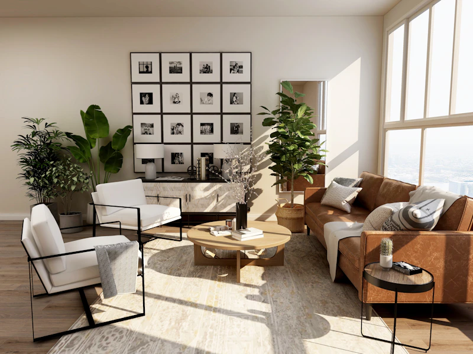

A fictional Melbourne painting studio concept. This interactive preview requires JavaScript.
Residential painting, surface restoration and decorative finishes.

Enquiries are demonstration only and no details are sent.